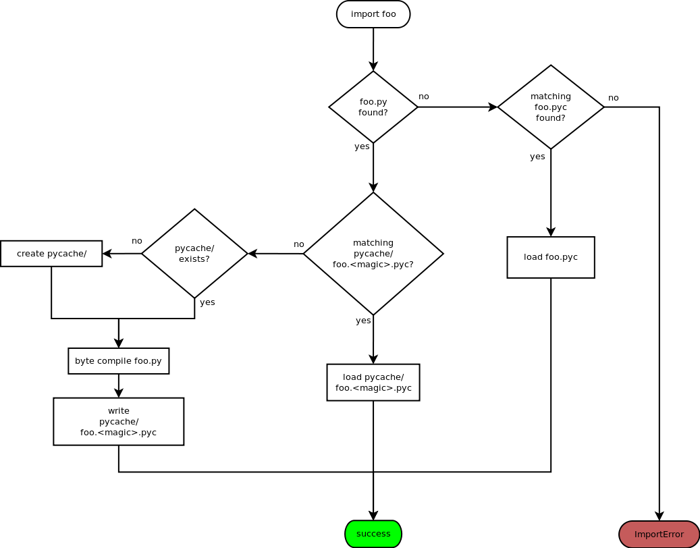

PEP 3147 -- PYC Repository Directories
| PEP: | 3147 |
|---|---|
| Title: | PYC Repository Directories |
| Author: | Barry Warsaw <barry at python.org> |
| Status: | Final |
| Type: | Standards Track |
| Created: | 2009-12-16 |
| Python-Version: | 3.2 |
| Post-History: | 2010-01-30, 2010-02-25, 2010-03-03, 2010-04-12 |
| Resolution: | http://mail.python.org/pipermail/python-dev/2010-April/099414.html |
Contents
Abstract
This PEP describes an extension to Python's import mechanism which improves sharing of Python source code files among multiple installed different versions of the Python interpreter. It does this by allowing more than one byte compilation file (.pyc files) to be co-located with the Python source file (.py file). The extension described here can also be used to support different Python compilation caches, such as JIT output that may be produced by an Unladen Swallow [1] enabled C Python.
Background
CPython compiles its source code into "byte code", and for performance reasons, it caches this byte code on the file system whenever the source file has changes. This makes loading of Python modules much faster because the compilation phase can be bypassed. When your source file is foo.py , CPython caches the byte code in a foo.pyc file right next to the source.
Byte code files contain two 32-bit big-endian numbers followed by the marshaled [2] code object. The 32-bit numbers represent a magic number and a timestamp. The magic number changes whenever Python changes the byte code format, e.g. by adding new byte codes to its virtual machine. This ensures that pyc files built for previous versions of the VM won't cause problems. The timestamp is used to make sure that the pyc file match the py file that was used to create it. When either the magic number or timestamp do not match, the py file is recompiled and a new pyc file is written.
In practice, it is well known that pyc files are not compatible across Python major releases. A reading of import.c [3] in the Python source code proves that within recent memory, every new CPython major release has bumped the pyc magic number.
Rationale
Linux distributions such as Ubuntu [4] and Debian [5] provide more than one Python version at the same time to their users. For example, Ubuntu 9.10 Karmic Koala users can install Python 2.5, 2.6, and 3.1, with Python 2.6 being the default.
This causes a conflict for third party Python source files installed by the system, because you cannot compile a single Python source file for more than one Python version at a time. When Python finds a pyc file with a non-matching magic number, it falls back to the slower process of recompiling the source. Thus if your system installed a /usr/share/python/foo.py , two different versions of Python would fight over the pyc file and rewrite it each time the source is compiled. (The standard library is unaffected by this, since multiple versions of the stdlib are installed on such distributions..)
Furthermore, in order to ease the burden on operating system packagers for these distributions, the distribution packages do not contain Python version numbers [6] ; they are shared across all Python versions installed on the system. Putting Python version numbers in the packages would be a maintenance nightmare, since all the packages - and their dependencies - would have to be updated every time a new Python release was added or removed from the distribution. Because of the sheer number of packages available, this amount of work is infeasible.
( PEP 384 [7] has been proposed to address binary compatibility issues of third party extension modules across different versions of Python.)
Because these distributions cannot share pyc files, elaborate mechanisms have been developed to put the resulting pyc files in non-shared locations while the source code is still shared. Examples include the symlink-based Debian regimes python-support [8] and python-central [9] . These approaches make for much more complicated, fragile, inscrutable, and fragmented policies for delivering Python applications to a wide range of users. Arguably more users get Python from their operating system vendor than from upstream tarballs. Thus, solving this pyc sharing problem for CPython is a high priority for such vendors.
This PEP proposes a solution to this problem.
Proposal
Python's import machinery is extended to write and search for byte code cache files in a single directory inside every Python package directory. This directory will be called __pycache__ .
Further, pyc file names will contain a magic string (called a "tag") that differentiates the Python version they were compiled for. This allows multiple byte compiled cache files to co-exist for a single Python source file.
The magic tag is implementation defined, but should contain the implementation name and a version number shorthand, e.g. cpython-32 . It must be unique among all versions of Python, and whenever the magic number is bumped, a new magic tag must be defined. An example pyc file for Python 3.2 is thus foo.cpython-32.pyc .
The magic tag is available in the imp module via the get_tag() function. This is parallel to the imp.get_magic() function.
This scheme has the added benefit of reducing the clutter in a Python package directory.
When a Python source file is imported for the first time, a __pycache__ directory will be created in the package directory, if one does not already exist. The pyc file for the imported source will be written to the __pycache__ directory, using the magic-tag formatted name. If either the creation of the __pycache__ directory or the pyc file inside that fails, the import will still succeed, just as it does in a pre-PEP-3147 world.
If the py source file is missing, the pyc file inside __pycache__ will be ignored. This eliminates the problem of accidental stale pyc file imports.
For backward compatibility, Python will still support pyc-only distributions, however it will only do so when the pyc file lives in the directory where the py file would have been, i.e. not in the __pycache__ directory. pyc file outside of __pycache__ will only be imported if the py source file is missing.
Tools such as py_compile [15] and compileall [16] will be extended to create PEP 3147 formatted layouts automatically, but will have an option to create pyc-only distribution layouts.
Examples
What would this look like in practice?
Let's say we have a Python package named alpha which contains a sub-package name beta . The source directory layout before byte compilation might look like this:
alpha/
__init__.py
one.py
two.py
beta/
__init__.py
three.py
four.py
After byte compiling this package with Python 3.2, you would see the following layout:
alpha/
__pycache__/
__init__.cpython-32.pyc
one.cpython-32.pyc
two.cpython-32.pyc
__init__.py
one.py
two.py
beta/
__pycache__/
__init__.cpython-32.pyc
three.cpython-32.pyc
four.cpython-32.pyc
__init__.py
three.py
four.py
Note: listing order may differ depending on the platform.
Let's say that two new versions of Python are installed, one is Python 3.3 and another is Unladen Swallow. After byte compilation, the file system would look like this:
alpha/
__pycache__/
__init__.cpython-32.pyc
__init__.cpython-33.pyc
__init__.unladen-10.pyc
one.cpython-32.pyc
one.cpython-33.pyc
one.unladen-10.pyc
two.cpython-32.pyc
two.cpython-33.pyc
two.unladen-10.pyc
__init__.py
one.py
two.py
beta/
__pycache__/
__init__.cpython-32.pyc
__init__.cpython-33.pyc
__init__.unladen-10.pyc
three.cpython-32.pyc
three.cpython-33.pyc
three.unladen-10.pyc
four.cpython-32.pyc
four.cpython-33.pyc
four.unladen-10.pyc
__init__.py
three.py
four.py
As you can see, as long as the Python version identifier string is unique, any number of pyc files can co-exist. These identifier strings are described in more detail below.
A nice property of this layout is that the __pycache__ directories can generally be ignored, such that a normal directory listing would show something like this:
alpha/
__pycache__/
__init__.py
one.py
two.py
beta/
__pycache__/
__init__.py
three.py
four.py
This is much less cluttered than even today's Python.
Python behavior
When Python searches for a module to import (say foo ), it may find one of several situations. As per current Python rules, the term "matching pyc" means that the magic number matches the current interpreter's magic number, and the source file's timestamp matches the timestamp in the pyc file exactly.
Case 0: The steady state
When Python is asked to import module foo , it searches for a foo.py file (or foo package, but that's not important for this discussion) along its sys.path . If found, Python looks to see if there is a matching __pycache__/foo.<magic>.pyc file, and if so, that pyc file is loaded.
Case 1: The first import
When Python locates the foo.py , if the __pycache__/foo.<magic>.pyc file is missing, Python will create it, also creating the __pycache__ directory if necessary. Python will parse and byte compile the foo.py file and save the byte code in __pycache__/foo.<magic>.pyc .
Case 2: The second import
When Python is asked to import module foo a second time (in a different process of course), it will again search for the foo.py file along its sys.path . When Python locates the foo.py file, it looks for a matching __pycache__/foo.<magic>.pyc and finding this, it reads the byte code and continues as usual.
Case 3: __pycache__/foo.<magic>.pyc with no source
It's possible that the foo.py file somehow got removed, while leaving the cached pyc file still on the file system. If the __pycache__/foo.<magic>.pyc file exists, but the foo.py file used to create it does not, Python will raise an ImportError when asked to import foo. In other words, Python will not import a pyc file from the cache directory unless the source file exists.
Case 4: legacy pyc files and source-less imports
Python will ignore all legacy pyc files when a source file exists next to it. In other words, if a foo.pyc file exists next to the foo.py file, the pyc file will be ignored in all cases
In order to continue to support source-less distributions though, if the source file is missing, Python will import a lone pyc file if it lives where the source file would have been.
Case 5: read-only file systems
When the source lives on a read-only file system, or the __pycache__ directory or pyc file cannot otherwise be written, all the same rules apply. This is also the case when __pycache__ happens to be written with permissions which do not allow for writing containing pyc files.
Flow chart
Here is a flow chart describing how modules are loaded:
Alternative Python implementations
Alternative Python implementations such as Jython [11] , IronPython [12] , PyPy [13] , Pynie [14] , and Unladen Swallow can also use the __pycache__ directory to store whatever compilation artifacts make sense for their platforms. For example, Jython could store the class file for the module in __pycache__/foo.jython-32.class .
Implementation strategy
This feature is targeted for Python 3.2, solving the problem for those and all future versions. It may be back-ported to Python 2.7. Vendors are free to backport the changes to earlier distributions as they see fit. For backports of this feature to Python 2, when the -U flag is used, a file such as foo.cpython-27u.pyc can be written.
Effects on existing code
Adoption of this PEP will affect existing code and idioms, both inside Python and outside. This section enumerates some of these effects.
Detecting PEP 3147 availability
The easiest way to detect whether your version of Python provides PEP 3147 functionality is to do the following check:
>>> import imp >>> has3147 = hasattr(imp, 'get_tag')
__file__
In Python 3, when you import a module, its __file__ attribute points to its source py file (in Python 2, it points to the pyc file). A package's __file__ points to the py file for its __init__.py . E.g.:
>>> import foo >>> foo.__file__ 'foo.py' # baz is a package >>> import baz >>> baz.__file__ 'baz/__init__.py'
Nothing in this PEP would change the semantics of __file__ .
This PEP proposes the addition of an __cached__ attribute to modules, which will always point to the actual pyc file that was read or written. When the environment variable $PYTHONDONTWRITEBYTECODE is set, or the -B option is given, or if the source lives on a read-only filesystem, then the __cached__ attribute will point to the location that the pyc file would have been written to if it didn't exist. This location of course includes the __pycache__ subdirectory in its path.
For alternative Python implementations which do not support pyc files, the __cached__ attribute may point to whatever information makes sense. E.g. on Jython, this might be the .class file for the module: __pycache__/foo.jython-32.class . Some implementations may use multiple compiled files to create the module, in which case __cached__ may be a tuple. The exact contents of __cached__ are Python implementation specific.
It is recommended that when nothing sensible can be calculated, implementations should set the __cached__ attribute to None .
py_compile and compileall
Python comes with two modules, py_compile [15] and compileall [16] which support compiling Python modules external to the built-in import machinery. py_compile in particular has intimate knowledge of byte compilation, so these will be updated to understand the new layout. The -b flag is added to compileall for writing legacy .pyc byte-compiled file path names.
bdist_wininst and the Windows installer
These tools also compile modules explicitly on installation. If they do not use py_compile and compileall , then they would also have to be modified to understand the new layout.
File extension checks
There exists some code which checks for files ending in .pyc and simply chops off the last character to find the matching .py file. This code will obviously fail once this PEP is implemented.
To support this use case, we'll add two new methods to the imp package [17] :
- imp.cache_from_source(py_path) -> pyc_path
- imp.source_from_cache(pyc_path) -> py_path
Alternative implementations are free to override these functions to return reasonable values based on their own support for this PEP. These methods are allowed to return None when the implementation (or PEP 302 loader [18] in effect) for whatever reason cannot calculate the appropriate file name. They should not raise exceptions.
Backports
For versions of Python earlier than 3.2 (and possibly 2.7), it is possible to backport this PEP. However, in Python 3.2 (and possibly 2.7), this behavior will be turned on by default, and in fact, it will replace the old behavior. Backports will need to support the old layout by default. We suggest supporting PEP 3147 through the use of an environment variable called $PYTHONENABLECACHEDIR or the command line switch -Xenablecachedir to enable the feature.
Makefiles and other dependency tools
Makefiles and other tools which calculate dependencies on .pyc files (e.g. to byte-compile the source if the .pyc is missing) will have to be updated to check the new paths.
Alternatives
This section describes some alternative approaches or details that were considered and rejected during the PEP's development.
Hexadecimal magic tags
pyc files inside of the __pycache__ directories contain a magic tag in their file names. These are mnemonic tags for the actual magic numbers used by the importer. We could have used the hexadecimal representation [10] of the binary magic number as a unique identifier. For example, in Python 3.2:
>>> from binascii import hexlify
>>> from imp import get_magic
>>> 'foo.{}.pyc'.format(hexlify(get_magic()).decode('ascii'))
'foo.580c0d0a.pyc'
This isn't particularly human friendly though, thus the magic tag proposed in this PEP.
PEP 304
There is some overlap between the goals of this PEP and PEP 304 [19] , which has been withdrawn. However PEP 304 would allow a user to create a shadow file system hierarchy in which to store pyc files. This concept of a shadow hierarchy for pyc files could be used to satisfy the aims of this PEP. Although the PEP 304 does not indicate why it was withdrawn, shadow directories have a number of problems. The location of the shadow pyc files would not be easily discovered and would depend on the proper and consistent use of the $PYTHONBYTECODE environment variable both by the system and by end users. There are also global implications, meaning that while the system might want to shadow pyc files, users might not want to, but the PEP defines only an all-or-nothing approach.
As an example of the problem, a common (though fragile) Python idiom for locating data files is to do something like this:
from os import dirname, join import foo.bar data_file = join(dirname(foo.bar.__file__), 'my.dat')
This would be problematic since foo.bar.__file__ will give the location of the pyc file in the shadow directory, and it may not be possible to find the my.dat file relative to the source directory from there.
Fat byte compilation files
An earlier version of this PEP described "fat" Python byte code files. These files would contain the equivalent of multiple pyc files in a single pyf file, with a lookup table keyed off the appropriate magic number. This was an extensible file format so that the first 5 parallel Python implementations could be supported fairly efficiently, but with extension lookup tables available to scale pyf byte code objects as large as necessary.
The fat byte compilation files were fairly complex, and inherently introduced difficult race conditions, so the current simplification of using directories was suggested. The same problem applies to using zip files as the fat pyc file format.
Multiple file extensions
The PEP author also considered an approach where multiple thin byte compiled files lived in the same place, but used different file extensions to designate the Python version. E.g. foo.pyc25, foo.pyc26, foo.pyc31 etc. This was rejected because of the clutter involved in writing so many different files. The multiple extension approach makes it more difficult (and an ongoing task) to update any tools that are dependent on the file extension.
.pyc
A proposal was floated to call the __pycache__ directory .pyc or some other dot-file name. This would have the effect on *nix systems of hiding the directory. There are many reasons why this was rejected by the BDFL [20] including the fact that dot-files are only special on some platforms, and we actually do not want to hide these completely from users.
Reference implementation
Work on this code is tracked in a Bazaar branch on Launchpad [22] until it's ready for merge into Python 3.2. The work-in-progress diff can also be viewed [23] and is updated automatically as new changes are uploaded.
A Rietveld code review issue [24] has been opened as of 2010-04-01 (no, this is not an April Fools joke :).
References
| [1] | PEP 3146 |
| [2] | The marshal module: http://www.python.org/doc/current/library/marshal.html |
| [3] | import.c: http://svn.python.org/view/python/branches/py3k/Python/import.c?view=markup |
| [4] | Ubuntu: < http://www.ubuntu.com > |
| [5] | Debian: < http://www.debian.org > |
| [6] | Debian Python Policy: http://www.debian.org/doc/packaging-manuals/python-policy/ |
| [7] | PEP 384 |
| [8] | python-support: http://wiki.debian.org/DebianPythonFAQ#Whatispython-support.3F |
| [9] | python-central: http://wiki.debian.org/DebianPythonFAQ#Whatispython-central.3F |
| [10] | binascii.hexlify(): http://www.python.org/doc/current/library/binascii.html#binascii.hexlify |
| [11] | Jython: http://www.jython.org/ |
| [12] | IronPython: http://ironpython.net/ |
| [13] | PyPy: http://codespeak.net/pypy/dist/pypy/doc/ |
| [14] | Pynie: http://code.google.com/p/pynie/ |
| [15] | ( 1 , 2 ) py_compile: http://docs.python.org/library/py_compile.html |
| [16] | ( 1 , 2 ) compileall: http://docs.python.org/library/compileall.html |
| [17] | imp: http://www.python.org/doc/current/library/imp.html |
| [18] | PEP 302 |
| [19] | PEP 304 |
| [20] | http://www.mail-archive.com/python-dev@python.org/msg45203.html |
| [21] | importlib: http://docs.python.org/3.1/library/importlib.html |
| [22] | https://code.launchpad.net/~barry/python/pep3147 |
| [23] | https://code.launchpad.net/~barry/python/pep3147/+merge/22648 |
| [24] | http://codereview.appspot.com/842043/show |
ACKNOWLEDGMENTS
Barry Warsaw's original idea was for fat Python byte code files. Martin von Loewis reviewed an early draft of the PEP and suggested the simplification to store traditional pyc and pyo files in a directory. Many other people reviewed early versions of this PEP and provided useful feedback including but not limited to:
- David Malcolm
- Josselin Mouette
- Matthias Klose
- Michael Hudson
- Michael Vogt
- Piotr Ożarowski
- Scott Kitterman
- Toshio Kuratomi
Copyright
This document has been placed in the public domain.